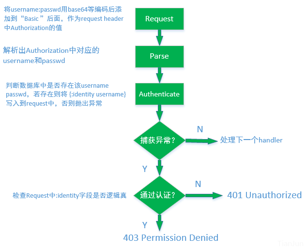

keywords: Web,Clojure CJKmainfont: KaiTi –-
理解Clojure中Buddy认证模块
有关加密解密的知识一直是自己的盲点，最近在看如何用用clojure写网站，顺带学习了下cookie和session相关的知识，在这里介绍下Buddy这个库，并总结下自己的理解，不对的地方恳请指正。Buddy提供了基于Ring的一些安全认证相关的接口，下面内容就此展开。
先解释几个术语：
Handler：在Ring中，request和response都可以看做map，handler就是对request的内容分析后返回相应response的函数
Backend：Buddy模块中每个backend都包含2个部分Authentication和Authorization，其中Authentication包含parse（将需要的认证数据从request中提取出来）和authenticate（根据parse提取的信息判断是否通过认证）两个步骤，Authorization则包含发生认证错误后如何处理该错误并返回相应response的实现。
根据Authentication和Authorization的实现不同，Buddy模块提供了5种实现，下面以最简单的http基本认证为例：
##Httpbasic
Httpbasic的处理逻辑如下图所示：

Httpbasic方式的缺点参见这里：
密码采用base64编码，很容易反向转换；
每次请求都要传输密码（增加了攻击概率；
密码缓存在本地浏览器，容易通过CSRF窃取；
采用https协议的话，仅仅能解决第一点问题。
##Session
该方案舍弃了httpbasic中传输username passwd的步骤，把验证和授权独立开来，授权放在login界面逻辑里去处理，将request中的:identity字段作为验证结果。而验证部分则只考虑是否存在:identity字段。
##Token
基于Token的方法则是将原来Httpbasic处理过程里，request的header中Authorization内容改为了token，从而避免直接存储用户名和密码，然后服务器端存储token和用户的对应关系。
##JWS Token
由于上面的token需要保存在服务器端，在用户量很大的时候，token的存储压力会很大，JWS token的用途就是将用户名密码加入签名后写进header的Authorization中，这样服务器端并不需要存储token到username的映射关系，只需要对token解码即可。这样做的好处是，不像Httpbasic简单采用base64对用户名密码编码，签名后的token很难破解得到原始的用户名密码信息。
##JWE Token
JWE Token处理的过程和JWS Token很像，区别在于引入非对称加密，将一部分敏感信息用公钥加密，服务端用私钥解密。
##参考
关于无状态认证的两篇讨论，里面提到了如何用python实现：
http://lucumr.pocoo.org/2013/11/17/my-favorite-database/
http://www.niwi.nz/2014/06/07/stateless-authentication-with-api-rest/